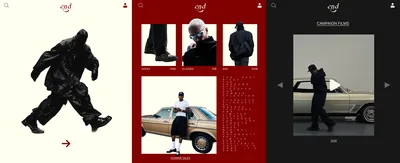

01Identité et site de vente en ligne
Happy End, la marque de streetwear que j’ai inventée
Happy End n’existait pas avant ce projet. J’ai créé le nom, le logo puis tout le site, avec une idée en tête : quelque chose de très épuré, coloré, mais qui garde une part de mystère.
Avant de toucher aux couleurs, j’ai posé les wireframes pour régler les parcours d’achat et la hiérarchie de l’information. Ensuite seulement est venue la palette, réduite à trois teintes : rouge sang, ivoire et noir.

